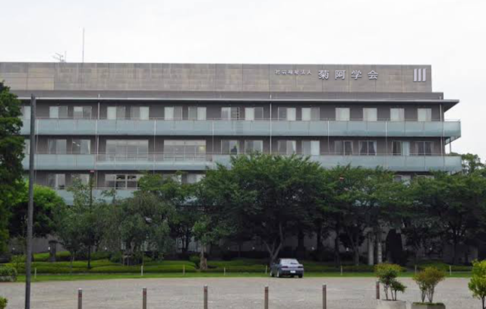
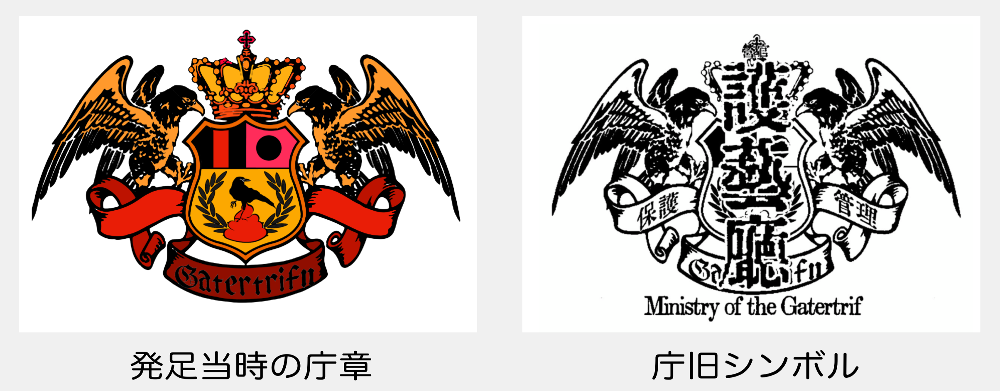
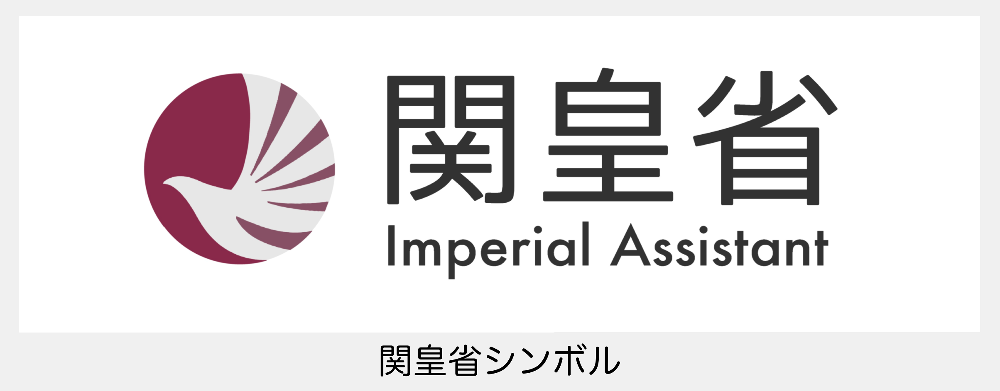
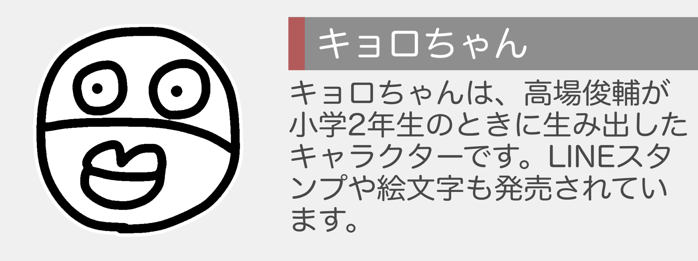

学会について About us

菊阿学会は2021年に創立されました。
本学会は2017年に創立された護藝庁を前身とし、菊郭学および倫舎学の研究を通じ、中立的な立場から菊阿史の真実を探るとともに非菊阿学者に菊阿学の知識の普及を図ることを目的としています。
護藝庁訓 Motto of Imperial Agency
こんにちは、護藝庁員の皆さん。
この機関では、主に 天皇の補佐、保護を行います。よって我々は大前提として、天皇を侮辱の対象にしないこと、最終目的は虐めの撲滅であることを掲げます。皆さんは一庁員としての責任を持ち、軽率且つ侮辱的な言動を控え、もし人道から外れる行為を行った場合は学級問題に成りかねないことを覚えておいてください。天皇にとってこの学校がより良いものとなるように心から祈っています。
学会訓 Motto of Society
○公文学語の原則
公文として文書を開示する際には危機管理の側面から、登場する人物名および用語は極力菊阿学語で書かれるべきであるという原則。しかし、学語化され機密性が高まった記事は不明瞭な供述を含む場合が多く、用語を定義付ける記事に於いては好ましくないとされる。 順って、そのような場合のみ相対的表現を用いた補足を認める事とする。
○虐皇禁止の原則
一切の虐皇を認めないという原則。虐皇は道徳的に非難されるべき行為であり根絶されるべきである。また、護藝庁は反上皇后主義の立場をとるため、虐皇はこの主張の力を弱める。これらの理由から虐皇を禁止する。
沿革 History
- 2017年 菊化護皇案に基づき菊子の保護・補佐・管理（PAC体制）を目的とした護藝庁が発足。
- 2018年7月14日 天皇解散事件により護藝庁が臨時解散。菊子の意向により再度構築され関皇省へ。
- 2018年後期 このころから阿学の復興がおこる。
- 2019年 卒菊により、関皇省は解散。
- 2021年1月末 菊阿学会の創立。


部署・委員会 Department/Committee
- 危機管理部（危管部・休止中）
問題の内部的な対処を目的とします。
- 共有資料部（共資部）
菊阿資料の共有を目的とします。
- 学位認定部（学認部）
学位認定試験の作成や学位認定を行います。
- 旧皇吏委員会
元東郭男児軟式テニス部員（皇吏）による委員会です。
いずれの部署・委員会についても常時部員・委員を募集しております。詳しくはお問い合わせいただくか、管理者へ参加の旨をお伝えください。
委員連絡群 Community
LINE
- 護藝庁（5名）
菊画の作成・共有を目的とします。委員募集中。
- 菊阿学会（3名）
学会の運営を目的とします。新規参加についてはお問い合わせください。
- 害子鑑賞同好会（5名）
市内の害子の鑑賞・行為の保存を目的とします。新規参加は原則でき兼ねます。
- 元男児テニス部（8名）
旧皇吏の連絡群です。新規参加は旧皇吏に限ります。
- 天皇解散視聴会（7名?・停止）
天皇解散をグループ通話で中継視聴する臨時群です。澤氏が破壊し現在は存在しません。
本学会のマスコットキャラクター Mascots
